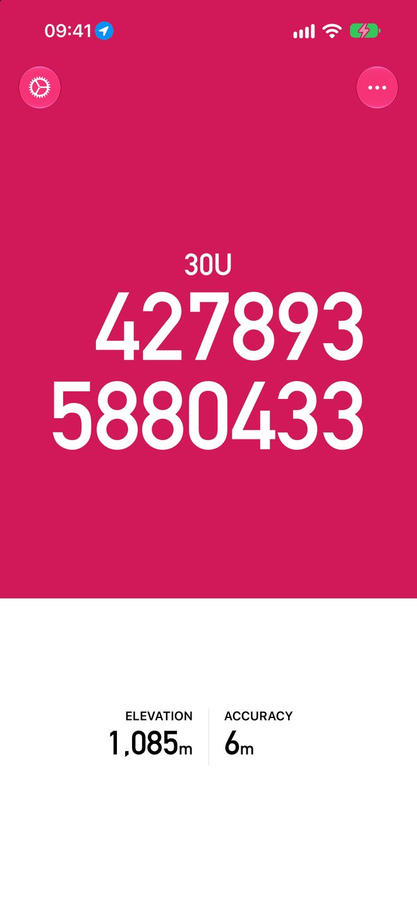
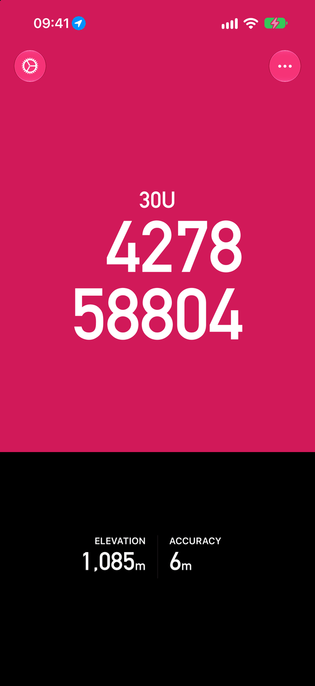

GPS UTM
UTM grid reference · Worldwide
GPS UTM displays an accurate UTM grid reference as marked on many topographic maps, in 1 metre, 10 metre or 100 metre formats, with over 100 datums from around the world.
Features
- No phone signal required — works in the most remote locations.
- 1 m, 10 m and 100 m formats.
- Shows elevation and position accuracy, in your choice of units.
- Light and dark appearance.
- Magnetic compass.
- Share your current location either as a grid reference or as a link to Google Maps.
- A large, clear, high contrast display ensures you can easily read your position in any light conditions.
- GPS runs only while the app is open, never in the background.
- Free, with no adverts and no in-app purchases.
Screenshots


Support
For problems, feedback or product suggestions, email tom@tomstrails.com. Please include the app version and your device model.
GPS UTM collects no data. See the privacy policy.